measured slices
Chat latency waterfall
A single chat call has client, prefill, inference, and post-processing pieces.

The waterfall shows where time accumulates before the response is done.
A reproducible systems benchmark for Python developers choosing local LLM deployments across model size, quantization, architecture, workload type, and CPU/GPU hardware.
The poster tells the story in three learnings. This companion UI shows the evidence behind it: latency waterfalls, cost bars, measured GPU energy, scaling plots, quantization comparisons, CPU/GPU views, system traces, and the summarized data table.
CPU only, L40S GPU
metrics_enriched.csv and summary_enriched.csv power this page.
| Slice | Meaning | Mean | Share |
|---|---|---|---|
| Network | client/API overhead | 0.030s avg | |
| Tokenization / prefill | prompt processing | 0.152s avg | |
| Inference | model generation | 1.798s avg | |
| Post-processing | parse, rank, serialize | 0.002s avg |
Compare within an experimental slice. Same-family size charts answer parameter scaling. Same-model precision charts answer quantization. Workload charts answer model routing.
Track measured GPU tokens per joule. Accuracy alone hides the infrastructure cost of every generated token.
Keep energy views honest. In this Lightning VM, GPU energy is measured via NVML at 0.1s (~10Hz). CPU package joules were not measured because RAPL was unavailable.
CPU energy in this VM is not a measured value. Rows marked cpu:tdp_estimate are utilization/TDP estimates. They remain in the CSV for transparency, but measured-energy charts exclude them unless a future run has cpu:rapl.
Cold model-load rows are separated. Raw CSVs keep first-load requests; the poster learning charts use steady-state rows where load_s <= 2s so a one-time Ollama load does not become a model-size claim.
These charts answer the first attendee question: “what does this call actually cost for chat, summarization, RAG-style search, and embeddings?”
A single chat call has client, prefill, inference, and post-processing pieces.
The waterfall shows where time accumulates before the response is done.
Long documents make prefill and generation more visible than small chat prompts.
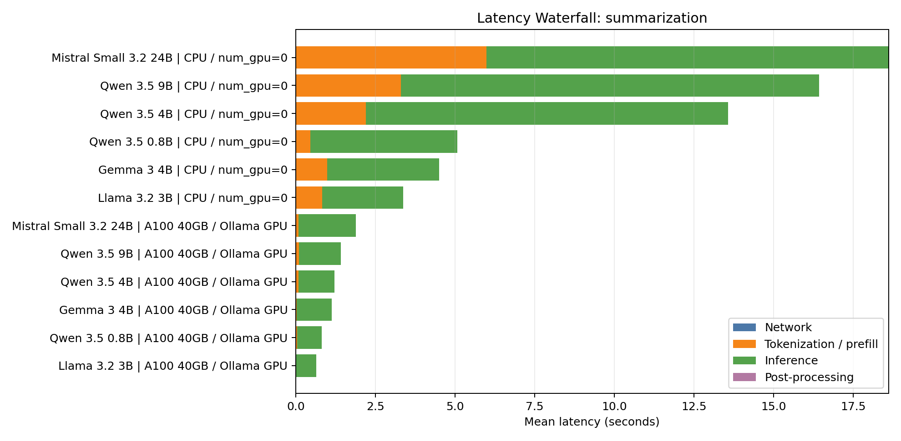
Use this to explain why document workflows feel different from chat.
Cost per request and cost per 1,000 tokens can tell different stories.
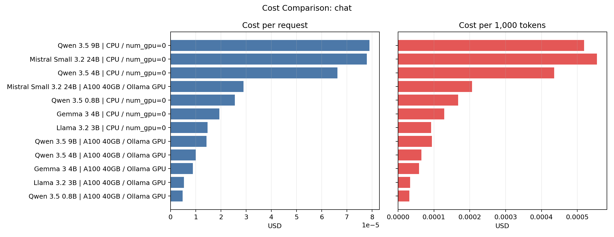
Use the two panels together; low per-request cost can still hide inefficient token economics.
Earlier chart generated from raw energy columns; treat CPU rows as estimates unless RAPL is present.
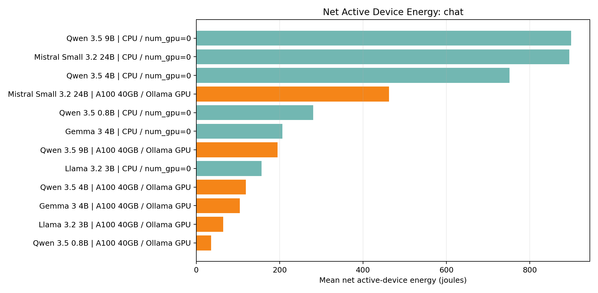
Use the corrected measured-GPU workload chart for scientific energy claims.
Earlier chart generated from raw energy columns; treat CPU rows as estimates unless RAPL is present.
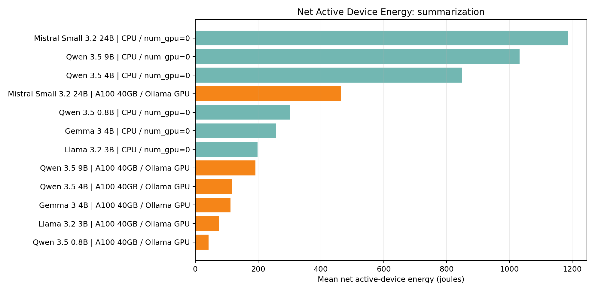
Use the corrected measured-GPU workload chart for scientific energy claims.
Tiny embedding batches may not amortize GPU overhead, but CPU energy needs RAPL or wall-meter validation.
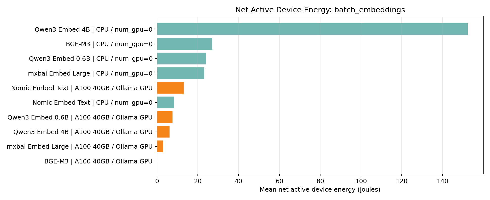
Increase batch size before assuming the GPU is cheaper.
The same pipeline can bottleneck differently on CPU and GPU.
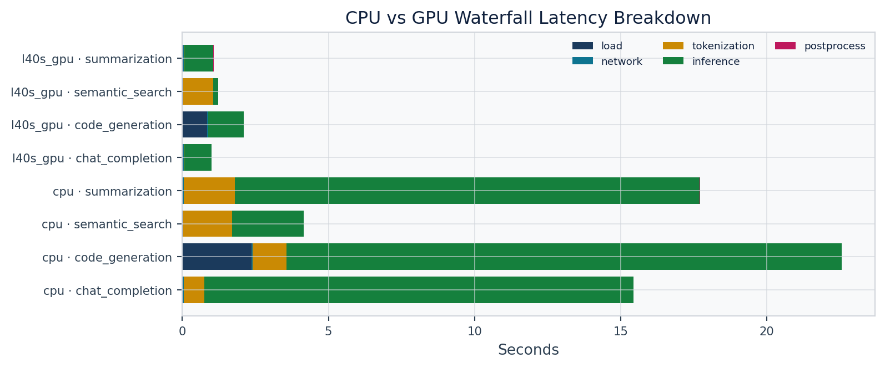
Look for the largest colored segment; that is where optimization should start.
This page isolates model size as much as possible. The goal is not to claim one model is universally smarter; it is to show when infrastructure cost rises faster than measured task quality.
Same-family size comparisons use steady-state GPU rows so cold Ollama load does not distort the model-size story.

Read each family line left-to-right; lower GPU energy/latency/VRAM is better, higher toy score is better.
Same-family scaling isolates parameter-count effects as much as the run allows.
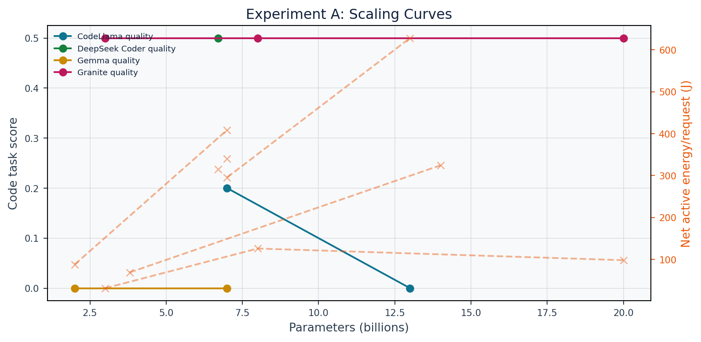
Use for the model-size story behind Learning 1.
The best practical model may be the one closest to the low-energy/high-quality frontier.
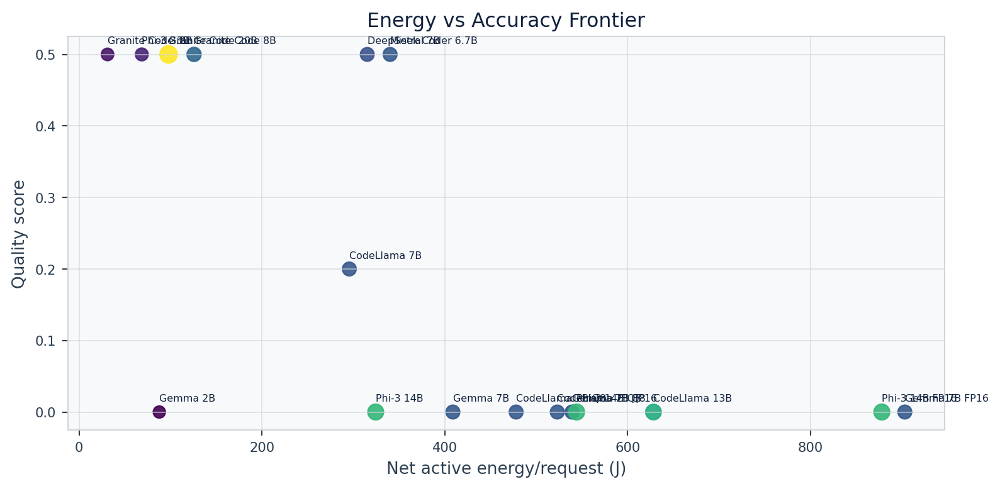
Models far from the frontier are dominated for this run.
More layers, larger KV cache, and more attention compute increase infrastructure pressure.
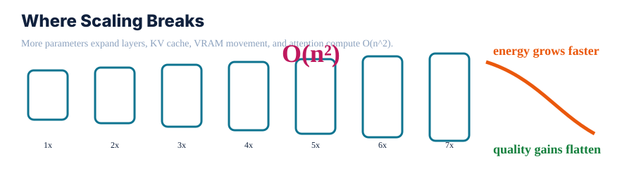
This is explanatory, not a benchmark measurement.
Quantization changes representation efficiency, not the underlying model family. The useful question is whether q8 or q4 retains enough task quality while cutting memory, energy, and latency.
FP16 is the 100% baseline; q8/q4 show how representation changes deployment cost.

Left panel costs should go down; right panel benefits should stay high or rise.
Same model, different precision separates compression effects from architecture effects.
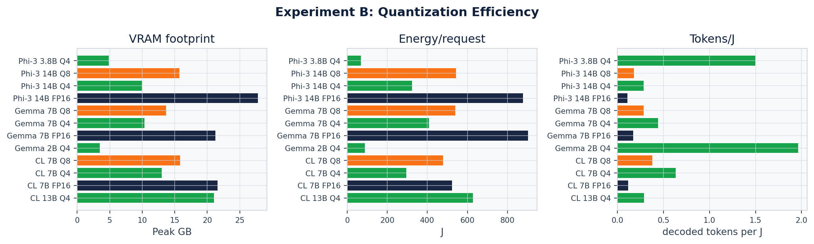
Use this with the q4/q8/fp16 chart to explain why memory movement matters.
Compression can shift VRAM, latency, energy, and throughput simultaneously.
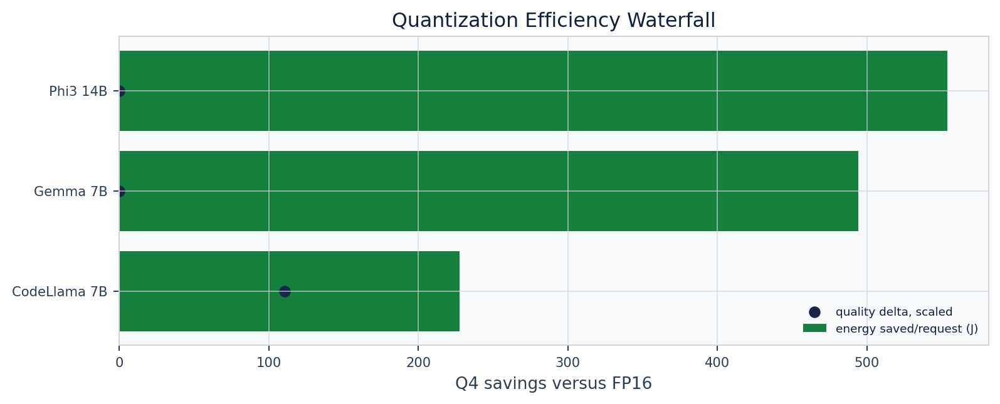
Read as a relative savings/contribution view.
“Best model” is the wrong question. Ask: best model for which workload, on which hardware, under what latency and energy budget?
Chat, summaries, RAG-style search, and embeddings do not stress the same parts of the stack.
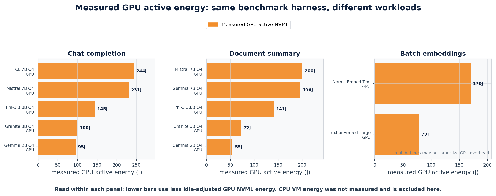
Compare within a panel; lower bars mean less measured idle-adjusted GPU NVML energy. CPU VM estimates are excluded.
Similar-size models can specialize differently by workload.
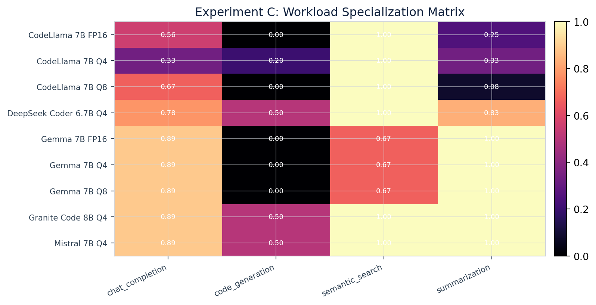
Rows are models, columns are tasks; color is measured task score.
Radar charts make model tradeoffs visible across several metrics at once.
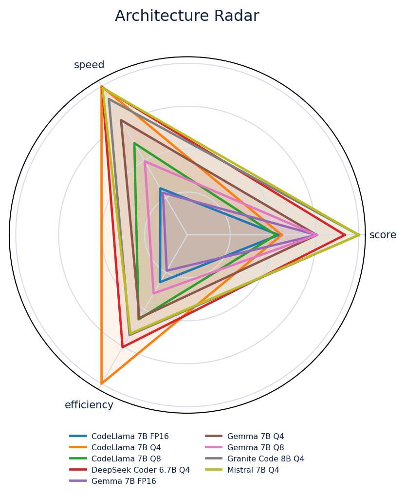
No single spoke is enough to select a deployment.
| Workload | Highest score | Lowest measured GPU energy | Best measured GPU tokens/J |
|---|---|---|---|
| Chat | Granite Code 3B Q4 0.89 | Gemma 2B Q4 95J | Gemma 2B Q4 1.35 tok/J |
| Code | Granite Code 3B Q4 0.50 | Granite Code 3B Q4 31J | Granite Code 3B Q4 2.23 tok/J |
| Embeddings | mxbai Embed Large 1.00 | mxbai Embed Large 79J | mxbai Embed Large 1.23 tok/J |
| RAG | Phi-3 3.8B Q4 1.00 | Gemma 2B Q4 21J | CodeLlama 7B Q4 1.01 tok/J |
| Summary | Gemma 2B Q4 1.00 | Gemma 2B Q4 55J | Gemma 2B Q4 1.35 tok/J |
CPU can be perfectly reasonable for tiny local jobs. GPU wins once prompts, outputs, batching, concurrency, or latency requirements grow enough to amortize the device.
Hardware choice changes when batch size, concurrency, prompt length, or output length grows.

This is a deployment heuristic, not a measured concurrency benchmark.
GPU advantage depends on model, workload shape, and batching.
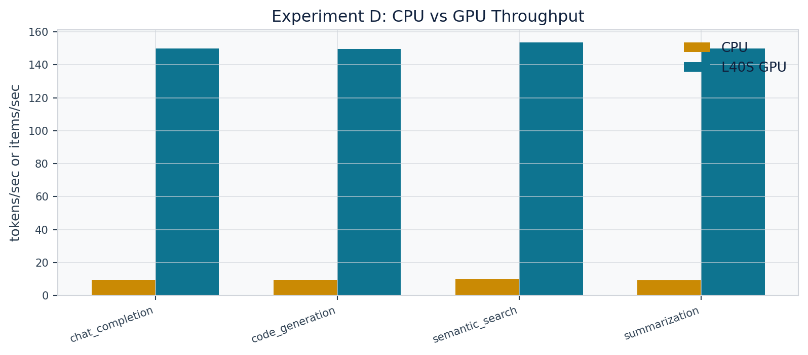
Treat single-request latency separately from throughput.
Concurrency changes latency and throughput because the GPU can amortize work.
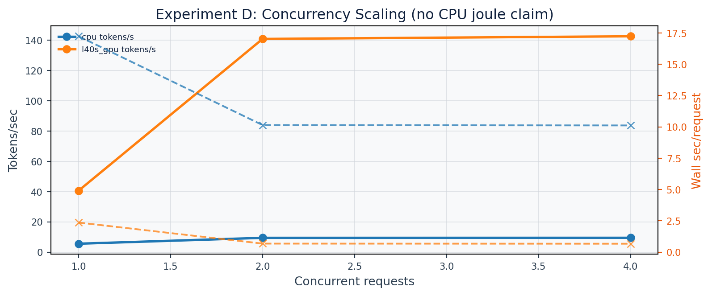
This chart no longer plots CPU joules from VM TDP estimates.
This is the observability view: where time, power, and memory pressure appear during one LLM request.
One call moves through Python client work, tokenization, RAM/VRAM, transformer inference, KV cache, sampling, and response parsing.

The cards show measured GPU joules, raw GPU draw, latency, and VRAM. CPU package joules were unavailable in the VM.
Power is not constant during a request; spikes reveal load, inference, and idle phases.
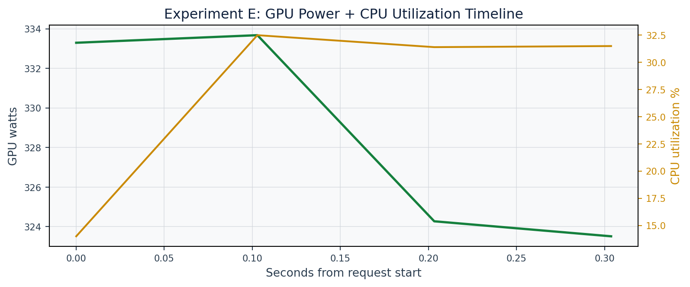
GPU watts are measured by NVML; CPU line is utilization, not CPU joules.
Trace-style views turn an opaque LLM call into timed stages.
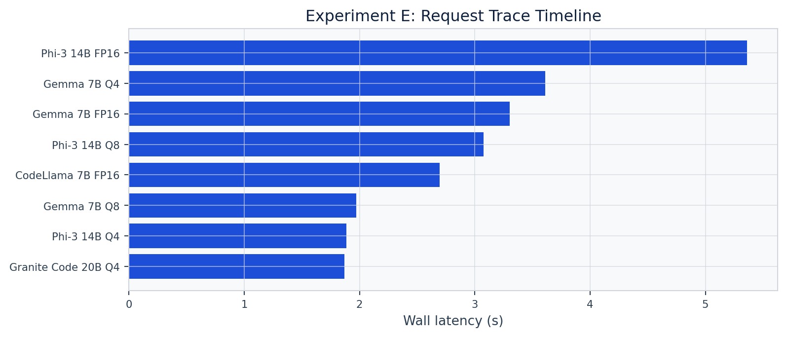
Match slow stages to code paths or hardware bottlenecks.
Energy attribution needs a model of the request lifecycle.
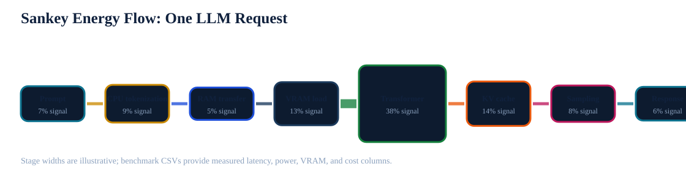
Sankey widths are explanatory; exact values come from the CSV columns.
Moving tokens, weights, and KV cache can be just as important as raw compute.
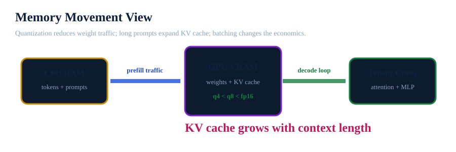
Memory is often the hidden deployment constraint.
Filter the summarized rows by model, family, quantization, hardware, or workload. This is the fastest way to answer “what should I run for my workload?”
Everything here is generated from the benchmark run. Attendees can inspect the plots, pull the CSVs, or rerun the Python scripts with their own endpoints.
The compact poster version for the PyCon session.
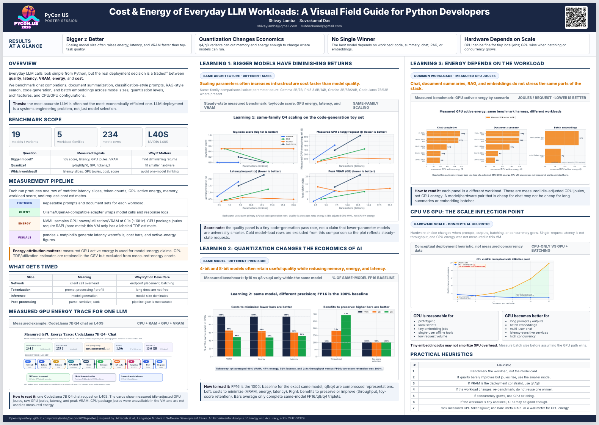
Use the dashboard for details; use the poster for the hallway story.